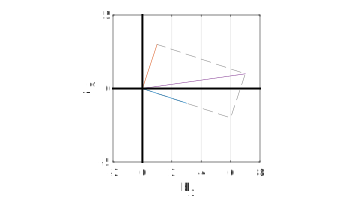
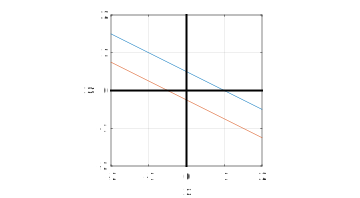

Section 4.1 Rows and columns
¶Suppose we have a system of \(n\) linear ODEs,
\begin{align*}
\dd{x_1}{t} \amp = a_{11} x_1 + a_{12} x_2 + \cdots + a_{1n} x_n - b_1 \\
\dd{x_2}{t} \amp = a_{21} x_1 + a_{22} x_2 + \cdots + a_{2n} x_n - b_2 \\
\amp \vdots \\
\dd{x_n}{t} \amp = a_{n1} x_1 + a_{n2} x_2 + \cdots + a_{nn} x_n - b_n \text{.}
\end{align*}
A steady state of this system occurs when
\begin{align*}
a_{11} x_1 + a_{12} x_2 + \cdots + a_{1n} x_n \amp = b_1 \\
a_{21} x_1 + a_{22} x_2 + \cdots + a_{2n} x_n \amp = b_2 \\
\amp \vdots \\
a_{n1} x_1 + a_{n2} x_2 + \cdots + a_{nn} x_n \amp = b_n \text{,}
\end{align*}
which is a linear algebraic system of equations. We can summarize the system with an \(n\times n\) matrix \(\bA\) and an \(n\times 1\) vector \(\bb\text{.}\) Let's start slowly, with some examples in \(n=2\) dimensions.
Subsection 4.1.1 Nonparallel lines
We can set the stage for matrices using a simple set of two linear equations in two variables, such as
\begin{align*}
3\amp x + \amp y = \amp 7\\
-\amp x + \amp 3y = \amp 1\text{.}
\end{align*}
This system happens to have the unique solution \(x=2\text{,}\) \(y=1\text{.}\) We can summarize it in terms of a coefficient matrix
\begin{equation*}
\bA = \begin{bmatrix}
3 \amp 1 \\ -1 \amp 3
\end{bmatrix}
\end{equation*}
and a vector
\begin{equation*}
\bb = \twovec{7}{1}\text{.}
\end{equation*}
We can interpret the system in two different ways, depending on whether we organize by rows (associated with equations) or columns (associated with variables).
Each row of the system is an equation describing a line in the \((x,y)\) plane. The intersection of the lines is the point representing the solution of the system.
A = [ 3 1; -1 3 ];
b = [7 ; 1];
fimplicit(@(x,y) A(1,1)*x+A(1,2)*y-b(1),[-1 3])
hold on
fimplicit(@(x,y) A(2,1)*x+A(2,2)*y-b(2),[-1 3])
axis([-1 3 -1 3])
plot([0 0],[-1 3],'k-','linewid',2)
plot([-1 3],[0 0],'k-','linewid',2)
axis equal, grid on
xlabel('x'), ylabel('y')

If we were to choose a different vector \(\bb\text{,}\) the lines in the picture would keep their same slopes and just move up and down. Thus we expect one unique solution (intersection) for any given \(\bb\text{.}\)
The column viewpoint is less familiar. We interpret the system as an equivalent statement about plane vectors:
\begin{equation*}
x \twovec{3}{-1} + y \twovec{1}{3} = \twovec{7}{1}\text{.}
\end{equation*}
We call this a linear combination of the columns of the matrix. Vectors are equal only if all their components are equal, so the meaning is unchanged. But it invites a different picture, interpreting \(x\) and \(y\) as coefficients and making \(\bb\) the target.
A = [ 3 1; -1 3 ];
b = [7 ; 1];
clr = get(gca,'colororder');
plot([0 2*A(1,1) b(1) A(1,2)],[0 2*A(2,1) b(2) A(2,2)],'--','color',[.5 .5 .5])
hold on
plot([0 A(1,1)],[0 A(2,1)],'color',clr(1,:))
plot([0 A(1,2)],[0 A(2,2)],'color',clr(2,:))
plot([0 b(1)],[0 b(2)])
axis equal, grid on
axis([-2 8 -5 5])
plot([0 0],[-5 5],'k-','linewid',2)
plot([-2 8],[0 0],'k-','linewid',2)
xlabel('b_1'), ylabel('b_2')

We might think of solving the system in this picture as expressing \(\bb\) in a different coordinate system defined by the columns of \(\bA\text{.}\) In fact, it's just a rotation and scaling of the default Cartesian system, so again from this perspective we expect a unique result for each \(\bb\text{.}\)
Subsection 4.1.2 Matrix times vector
The column-oriented interpretation above is the foundation for our first algebraic operation with matrices. If \(\bA\) is an \(n\times n\) matrix and \(\bx\) is an \(n\times 1\) vector, then we define
\begin{equation*}
\bA\bx = x_1 \begin{bmatrix} a_{11}\\a_{21}\\\vdots\\a_{n1} \end{bmatrix}
+ x_2 \begin{bmatrix} a_{12}\\a_{22}\\\vdots\\a_{n2} \end{bmatrix}
+ \cdots + x_n \begin{bmatrix} a_{1n}\\a_{2n}\\\vdots\\a_{nn} \end{bmatrix} \text{.}
\end{equation*}
That is, a matrix times a vector is a linear combination of the columns of the matrix.
We can compute
\begin{equation*}
\begin{bmatrix} 1 \amp 0 \amp -3 \\ 2 \amp -2 \amp 1 \\ 0 \amp 4 \amp 1 \end{bmatrix}
\begin{bmatrix} 2 \\ 1 \\ -2 \end{bmatrix}
= 2 \begin{bmatrix} 1 \\ 2 \\ 0 \end{bmatrix} + 1 \begin{bmatrix} 0 \\ -2 \\ 4 \end{bmatrix}
- 2 \begin{bmatrix} -3 \\ 1 \\ 1 \end{bmatrix}
= \begin{bmatrix} 8 \\ 0 \\ 2 \end{bmatrix} \text{.}
\end{equation*}
Usually this sort of computation is not written out as a linear combination. Instead you just kind of zip together each row of \(\bA\) with the given vector:
\begin{equation*}
\begin{bmatrix} 1 \amp 0 \amp -3 \\ 2 \amp -2 \amp 1 \\ 0 \amp 4 \amp 1 \end{bmatrix}
\begin{bmatrix} 2 \\ 1 \\ -2 \end{bmatrix}
= \begin{bmatrix} (1)(2) + (0)(1) + (-3)(-2) \\ (2)(2) + (-2)(1) + (1)(-2) \\ (0)(2) + (4)(1) + (1)(-2) \end{bmatrix}\text{.}
\end{equation*}
This definition of matrix times vector justifies writing the linear system of equations at the top of this section as
\begin{equation*}
\dd{\bx}{t} = \bA \bx - \bb
\end{equation*}
for the ODEs, and
\begin{equation*}
\bA \bx = \bb
\end{equation*}
for the linear algebraic system determining the steady state.
Fact 4.1.2
The linear system with coefficient matrix \(\bA\) and right-side vector \(\bb\) is about solving \(\bA\bx=\bb\) for \(\bx\text{.}\)
Subsection 4.1.3 Parallel lines
Another instructive case is the system
\begin{align*}
\amp x \amp+ 2 y = \amp 1\\
\amp -2 x \amp- 4 y = \amp -1\text{.}
\end{align*}
A = [ 1 2; -2 -4 ];
b = [1 ; 1];
clf
fimplicit(@(x,y) A(1,1)*x+A(1,2)*y-b(1),[-2 2])
hold on
fimplicit(@(x,y) A(2,1)*x+A(2,2)*y-b(2),[-2 2])
axis equal, grid on
axis([-2 2 -2 2])
plot([0 0],[-2 2],'k-','linewid',2)
plot([-2 2],[0 0],'k-','linewid',2)
xlabel('x'), ylabel('y')

The row picture makes it clear that we are seeking the intersection of two distinct parallel lines, an enterprise that is bound to disappoint us. Likewise, the column picture (not given) is about finding combinations of the column vectors \(\twovec{1}{-2}\) and \(\twovec{2}{-4}\text{.}\) These too are parallel, so all of their linear combinations lie on a single line through the origin. The given vector \(\bb=\twovec{1}{1}\) is not on this line, so no solution exists.
However, a different vector on the right-hand side such as \(\bb=\twovec{-3}{6}\) does lie on this line, and we can solve the system in this case. In fact, there are infinitely many ways to do it:
\begin{align*}
(1+2c) \twovec{1}{-2} - (2+c)\twovec{2}{-4} \amp = \left( \twovec{1}{-2} - 2 \twovec{2}{-4} \right) + c \left( 2\twovec{1}{-2} - \twovec{2}{-4} \right) \\
\amp = \twovec{-3}{6} + c\cdot \textbf{0}\text{.}
\end{align*}
In this situation, the corresponding row picture still has two parallel lines, but they conincide, also indicating the infinite set of solutions. For parallel lines, you can have zero or infinitely many solutions; there is nothing in between.
Subsection 4.1.4 Singular matrices
Although we have only examined two two-dimensional cases, they contain most of what we will see in general. A system of \(n\) linear equations in \(n\) variables with a particular matrix \(\bA\) will be one of two basic types:
- There is a unique solution for any choice of \(\bb\text{,}\) or
- Depending on \(\bb\text{,}\) there is no solution or infinitely many solutions.
In the second case we say the matrix \(\bA\) is singular, and in the first case we say it is nonsingular (or "invertible").
The singular case has a familiar pattern to it. If there is a linear combination of the columns of \(\bA\) that gives a zero vector--that is, if the linear system has a null solution--then any multiple of that null solution can be added to a particular solution in order to get another particular solution.